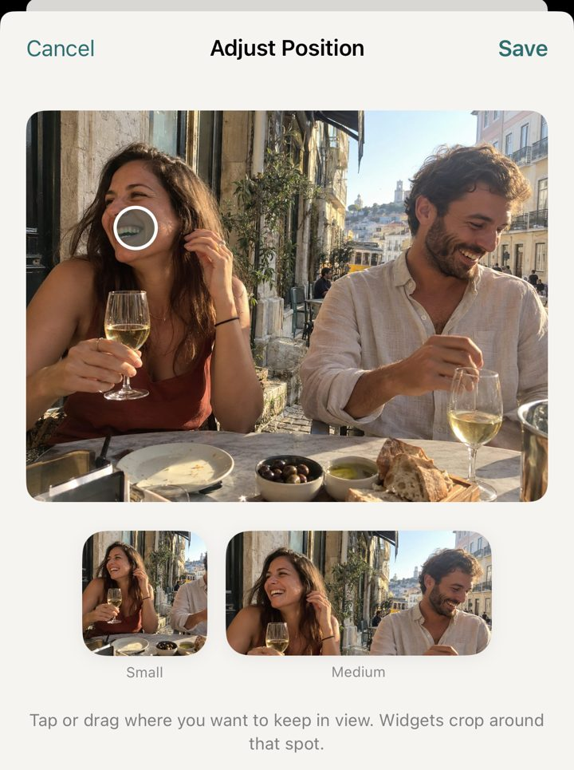

Fotowidget snijdt gezichten af? Zo los je het op op je iPhone
Een widget heeft een vaste vorm. Je foto meestal niet. Als die twee niet passen, moet de widget iets wegsnijden — en bij portretten is dat vaak de bovenkant van iemands hoofd of de persoon aan de rand.
In Mantel zijn er twee manieren om dit op te lossen. Allebei gratis.
Waarom gezichten worden afgesneden
Een kleine widget is vierkant. De meeste iPhone-foto’s zijn 3:4 staand of 4:3 liggend. Om het vierkant te vullen, moet een deel van de foto weg. Standaard wordt het midden van de foto gebruikt, dus een gezicht dicht bij de boven- of zijkant kan erbuiten vallen.
Oplossing 1: kies de plek die in beeld blijft
Het best als je de widget helemaal gevuld wilt, maar met een gezicht in het midden.
Open Mantel en open de set met de foto.
Houd de foto ingedrukt en tik op “Pas uitsnede aan”.
Tik op of sleep naar de plek die in beeld moet blijven. De voorvertoningen voor klein en middelgroot onder de foto veranderen mee terwijl je schuift.
Tik op “Bewaar”. De widget snijdt de foto nu bij rond die plek.

Je kunt voor elke foto een andere plek kiezen. Tik op “Midden” om terug te gaan naar het midden.
Oplossing 2: toon de hele foto
Het best als er niets van de foto mag wegvallen — een groepsfoto, of een foto met tekst erin.
Open de set.
Kies naast “Foto”de optie “Hele foto”.
De widget toont de hele foto zonder bijsnijden, met een kleine marge eromheen. Dit geldt voor elke foto in de set. “Vul het kader” zet de widget weer terug op helemaal gevuld.
Welke moet ik gebruiken?
Eén persoon of een huisdier — Oplossing 1. De widget blijft gevuld en het gezicht blijft in beeld.
Meerdere mensen of een weids landschap — Oplossing 2. Niemand wordt afgesneden.
Een mix — gebruik aparte sets, bijvoorbeeld één set op “Vul het kader” en één op “Hele foto”, elk in een eigen widget (meer dan één set vereist Pro).
Vragen
Verandert het aanpassen van de uitsnede mijn originele foto?Nee. Mantel onthoudt alleen welke plek in beeld moet blijven. Je originele foto’s worden nooit gewijzigd.
Is dit een Pro-functie?Nee. “Pas uitsnede aan” en “Hele foto” zijn allebei gratis. De gratis versie heeft één kleine widget; middelgrote en grote widgets zijn Pro.
Hoe maak ik het ongedaan?Open “Pas uitsnede aan” opnieuw, tik op “Midden” en daarna op “Bewaar”.